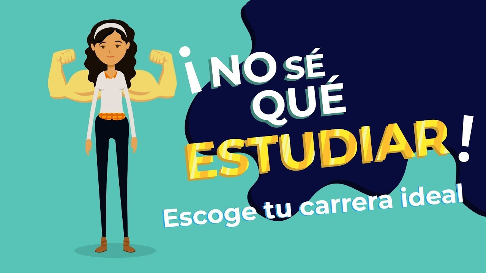

Luis Mauricio Burgos Medianero
Mi web Personal
Noticias
Tienes tiempo libre?
Cuando se habla de ocio y tiempo libre se suelen asociar dichos conceptos como si de sinónimos se tratasen, sin embargo, se debe tener en cuenta que aun existiendo una estrecha relación entre ambos conceptos, se trata de concepciones diferentes: El tiempo libre se define como un tiempo fuera de las obligaciones personales, o lo que es lo mismo, el tiempo que queda tras haber satisfecho todas las necesidades y obligaciones. Por su parte, el ocio durante el tiempo libre, implica la forma en la que se ocupa dicho tiempo libre; Esta forma, implica la realización de actividades que reportan una satisfacción personal, y que se realizan de forma libre y voluntaria. El tiempo libre aparece como el continente mientras que el ocio se manifiesta como su contenido. No todas las actividades que hacemos en el tiempo libre son ocio ya que, para serlo, tienen que cumplir con las que se consideran sus características fundamentales: ser libre o desinteresado, voluntario, que produce placer y que se realiza posteriormente a la realización de las obligaciones y necesidades básicas.
No sabes que estudiar?
Decidir qué estudiar es una decisión muy importante, por eso es habitual pensar mucho en ello antes de tomar la decisión definitiva, ya que elegir qué estudiar es algo que encaminará tu futuro laboral y a lo que deberás dedicar mucho tiempo. Además, es un momento de la vida en el que se acostumbra a generar mucha presión y estrés, ya que aparece el miedo a no obtener una nota suficiente para ir a una determinada universidad, tienes que escoger entre varias opciones de las que ninguna te terminan de convencer, te da miedo el cambio, entre otros.